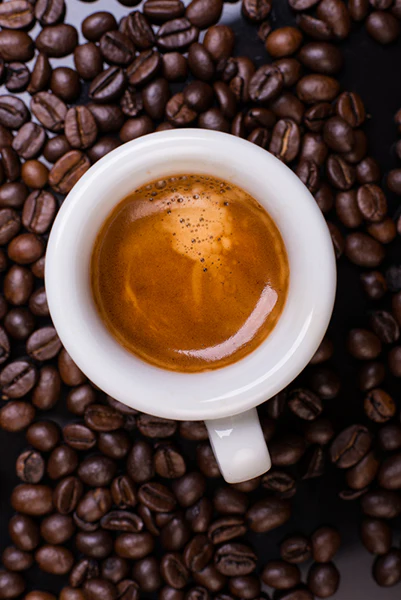
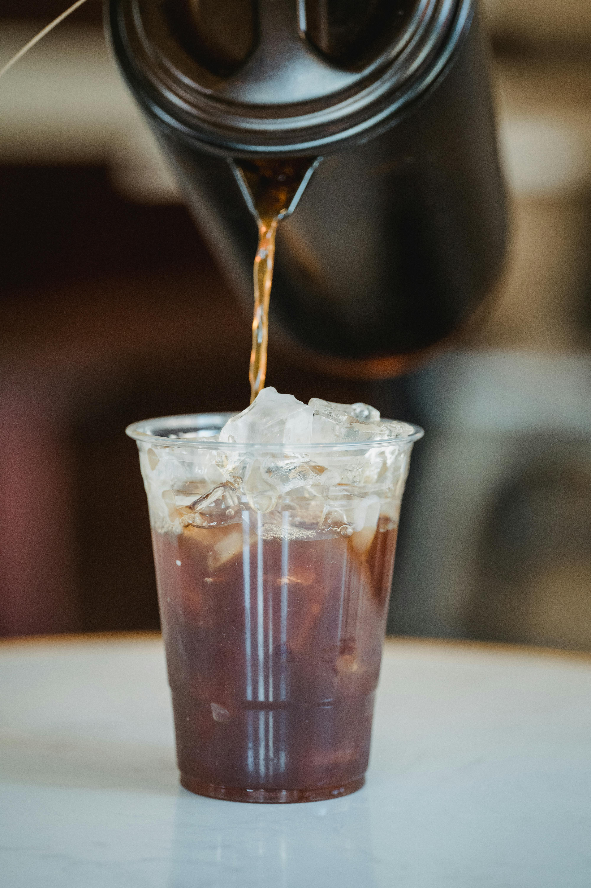
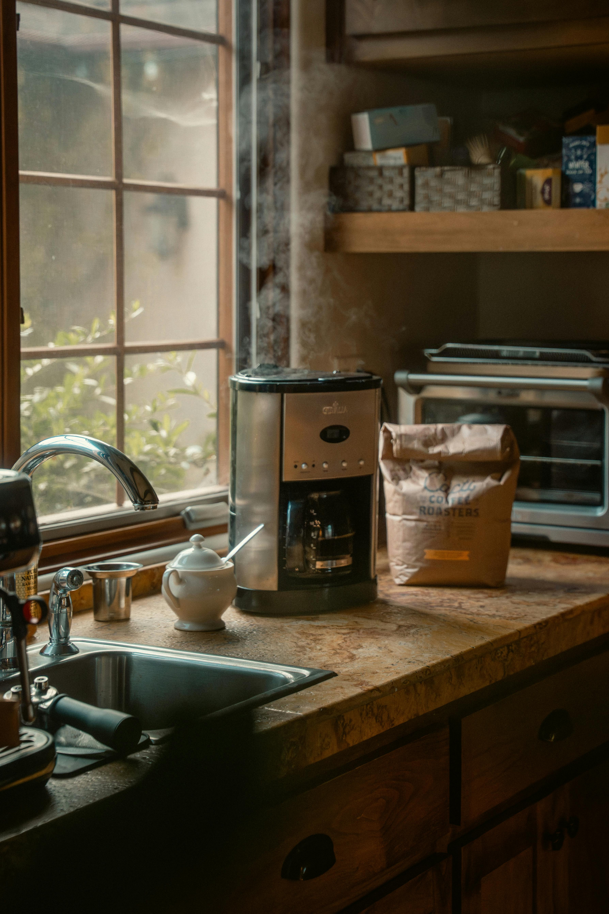
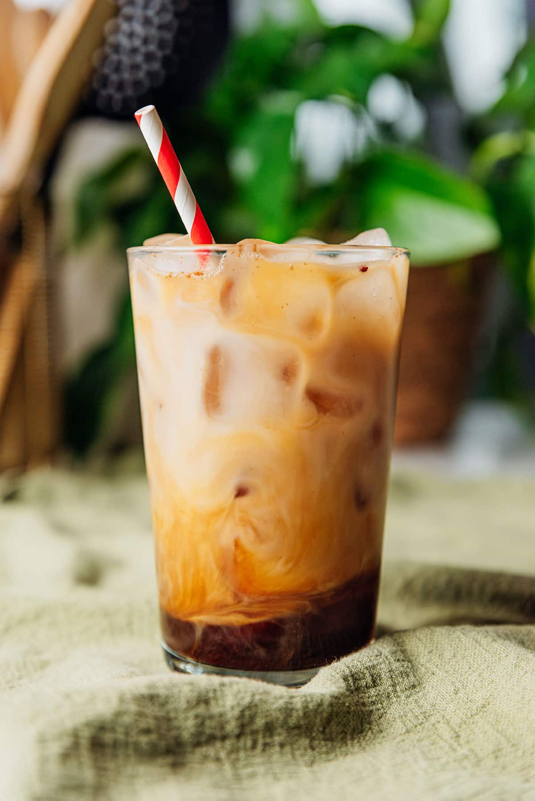

About Coffee
{kind=link}
According to legend, a goat herder named Kaldi was the first person who discovered coffee beans and their benefits. Kaldi noticed that after his goats ate the cherries of a particular tree in the ancient coffee forests of the Ethiopian plateau, they were so full of energy that they didn’t want to sleep at night.
There are many different ways to drink and make coffee. Below are a few popular types and what makes each one unique.
Espresso
{kind=link}
Espresso is an intricate way to brew a highly concentrated coffee by using high pressure and finely ground coffee. This process creates a strong, syrupy shot with a layer of foam called crema on top.
Latte

“Latte” in Italian means milk. A latte blends espresso with steamed milk for a creamy, balanced drink.
Personal favorite!
Cold Brew
{kind=link}
Cold brew is made by steeping coffee grounds in cold water for many hours, producing a smooth and low-acid concentrate.
I love it with flavored cold foam!
Drip Coffee
{kind=link}
A classic brew method where hot water runs through grounds in a filter and drips into a pot or mug.
Affogato

A dessert coffee where hot espresso is poured over ice cream.
Shaken Espresso
{kind=link}
Made by shaking espresso with ice to quickly chill and aerate it, creating a light and foamy layer.
My current go-to!